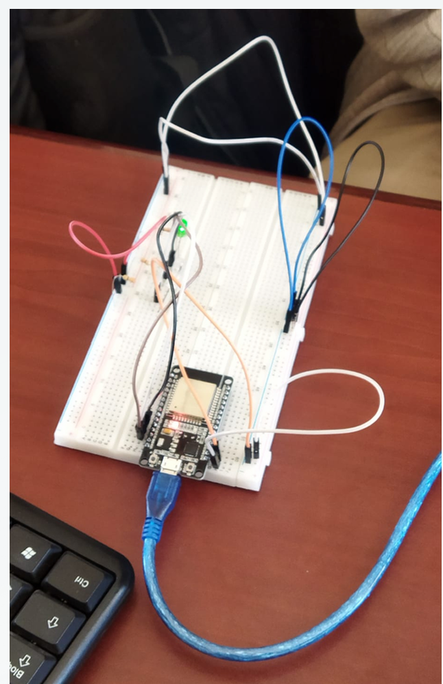
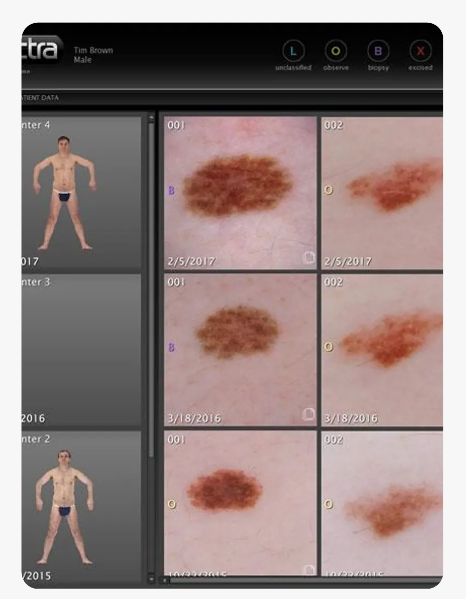

Laboratorios de Innovación
Compendio de soluciones técnicas y desarrollos experimentales realizados durante mi formación avanzada en Informática. Cada proyecto integra lógica de programación, diseño normativo de infraestructura y optimización de sistemas.

Simulación de Estados Lógicos
Desarrollo de una interfaz dinámica basada en la manipulación del DOM. El sistema procesa eventos en tiempo real para gestionar variables de salud, implementando algoritmos de respuesta visual (gradientes dinámicos) y lógica condicional de estados críticos.

Arquitectura LAN Normatizada
Memoria técnica para el diseño de una red corporativa bajo estándares ISO/IEC 11801. Incluye el modelado de topologías en estrella, cálculo de ancho de banda, selección de hardware activo y planes de respaldo energético ininterrumpido.

Motor de Asistencia "Noctis 3D"
Dirección y desarrollo nativo en Python del asistente virtual "Noctis". El proyecto integra procesamiento de lenguaje natural, módulos de memoria/voz y la renderización en tiempo real de modelos tridimensionales (formato .vrm). Diseñado para automatizar soporte técnico, operar sistemas de archivos y ejecutar comandos de red mediante interacciones de voz fluidas.

Dirección Tecnológica: Lumiere Royale
Gestión operativa y tecnológica de la marca comercial Lumiere Royale y operaciones de retail anexas. Diseño de estrategias de diversificación de ingresos y escalabilidad de marca hacia un modelo de empresa matriz. Aplicación directa de inteligencia de negocios para optimizar logística, compras a proveedores y la experiencia del cliente final.

Encendido Gestional Inteligente
Integración de visión artificial con hardware físico. Desarrollo en Python utilizando MediaPipe para el reconocimiento de gestos manuales (pulgar arriba/abajo) a través de la cámara web, enviando señales por comunicación serial a un microcontrolador Arduino ESP32 para accionar componentes electrónicos en tiempo real.

Motor de Diagnóstico: Melanoma IA
Herramienta de detección temprana de cáncer de piel. El sistema utiliza un modelo de Inteligencia Artificial entrenado con miles de casos clínicos. Integrado con Python, Keras y Tkinter, procesa imágenes dermatológicas para devolver un pre-diagnóstico automatizado de lesiones benignas o malignas con alta precisión computacional.